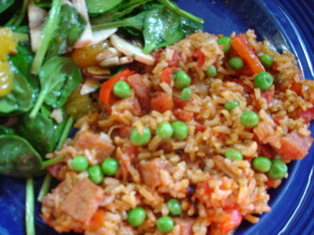

Two people and a ham
A description of eternity, and a quote which is popularly attributed to Dorothy Parker. This always seems to be particularly apt in my house after Easter, since I like ham, Poppy and Calvin don’t; so although we had company to help us eat it we still have a fairly big chunk left over.
Last night I made a dish David Bloom and I used to cook a lot back in Buffalo during our impoverished student days—Spanish Rice. I would normally make it with bacon but diced ham was a fine substitute and it went over great with the guys. This is a seat of your pants kind of recipe, but this is more or less how I made it. Use your imagination and the vegetables you have on hand.
Spanish Rice
Sauté onion, garlic, and green or red pepper, chopped, in olive oil in pot or large skillet. Add diced bacon or ham and fry until it crisps a bit. Add seasonings to taste—I used chili powder, cumin, and a big shake of hot smoked Spanish paprika, available from Adriana’s Caravan along with a little dried oregano and salt. Stir in rice and coat it with oil—I used about 1 1/2 cups (rice, that is, not oil). I then added 2 cans diced tomatoes w/green chilies (with the juice) and about 10 ounces of chicken stock. Cover pan and simmer until rice is cooked. A handful of peas added at the end are nice and they make the whole thing kind of paella-ish.

I noticed that The Wednesday Chef has a wonderful-sounding recipe in her blog today using ham—roasted Belgian endives with garlicky breadcrumbs and ham scattered over them. I may try that tomorrow, unless we just have Ham and Eggs…
Comments
Did you go to UB? In my student days in Buffalo we never ate anything like that… pizza, duffs wings, chicken tenders, wings, burgers, anchor bar wings, ramen, wings, free samples from wegmans, beer, 99 cent breakfast on niagara falls blvd, burger king, and wings.
Yes, I did go to UB (SUNY at Buffalo) but I was so impoverished that I didn’t eat out much, hence the Spanish rice at home. I do remember eating wonderful roast beef on weck, and going to Niagara Falls for Chinese food. And shopping for produce on Niagara Street—I don’t know if they still have the produce market there, this was back in the ’70s.
Mmm roast beef on weck. I suspect that the produce market is no longer there thanks to the awesome supermarkets- Tops & Wegmans (a little competition is a really good thing as they each try to outdo one another). My ruit & veggies choices consisted solely of french fries at that time, so I’m probably not the best person to ask. UB has expanded significantly lately.
Add a comment